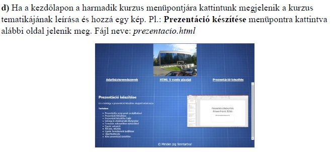

- XML kialakulása, XML szabvány elemei, Infoset és XDM modell eleme.
- DTD szabvány, DTD létrehozás módszertana. XML tervezésének módszertana.
- XMLSchema működése, elemek áttekintése. A séma építőkövei.
- XMLSchema haladó elemei, tervezési módszertan.
- A SAX felület adatmodellje és működése, API elemek.
- A DOM felület adatmodellje és működése, API elemek áttekintése.
